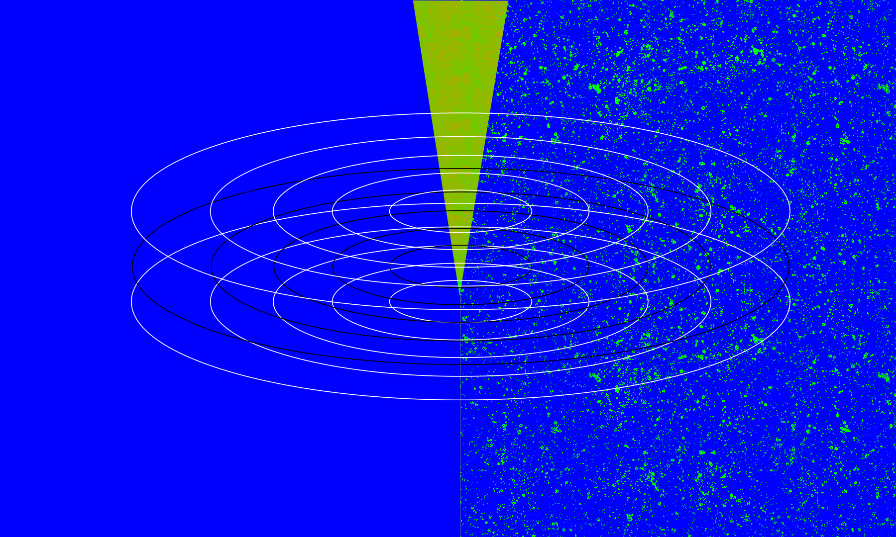
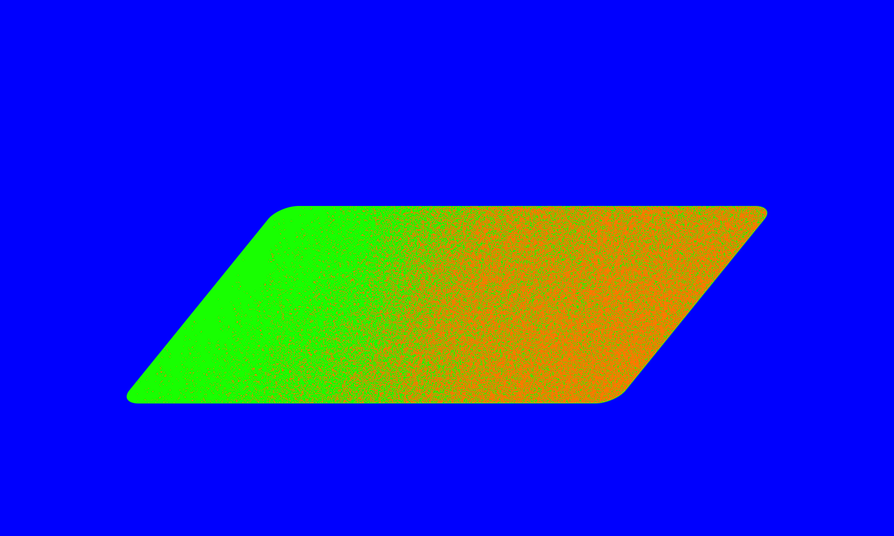
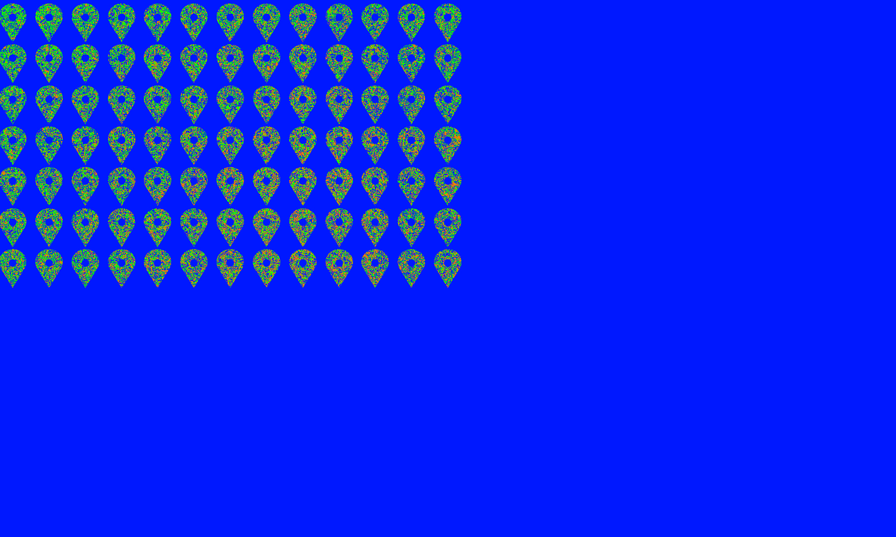
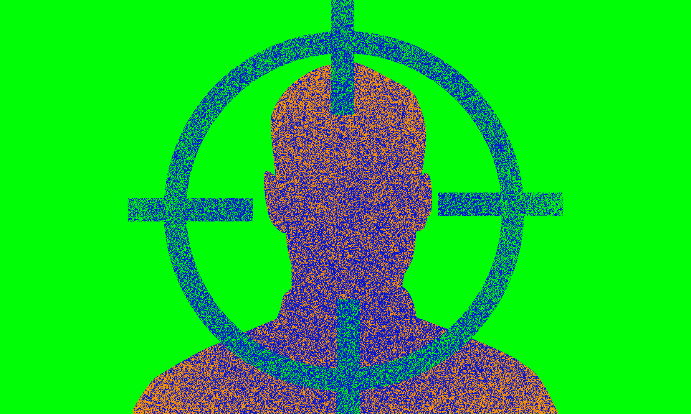
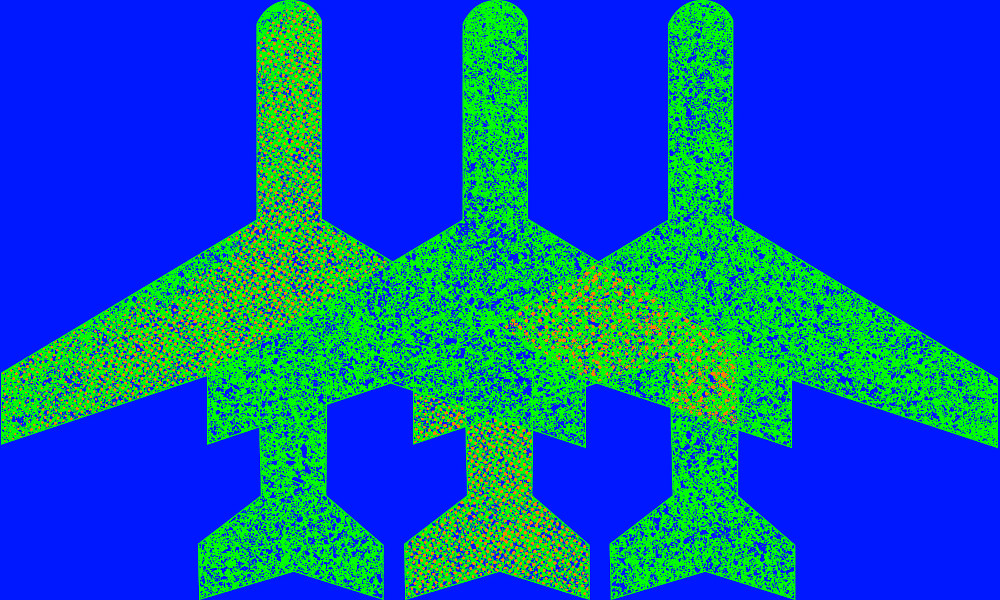
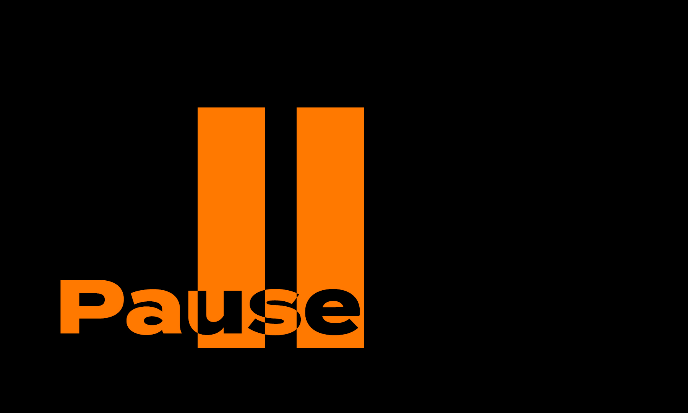
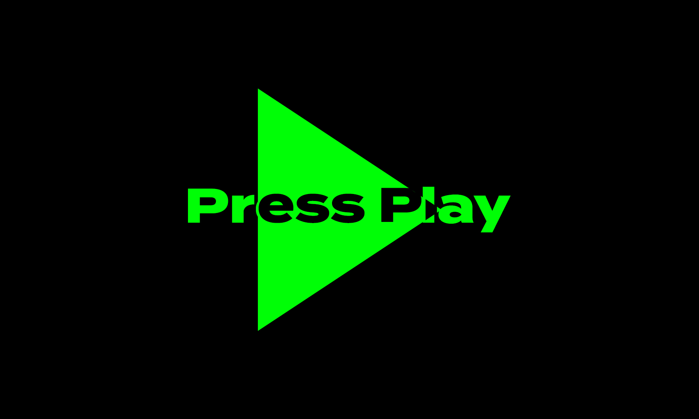

what am i
The Internet is often regarded as an abstract amorphous omnipresent Leviathan, beyond control. A good visual metaphor might be the No Stop City proposed by radical architects Archigram. An endless sprawl of space without walls or doors, where citizens camp in open air, creating a blank space for humanities potentiality.






